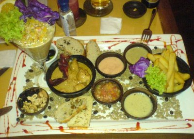
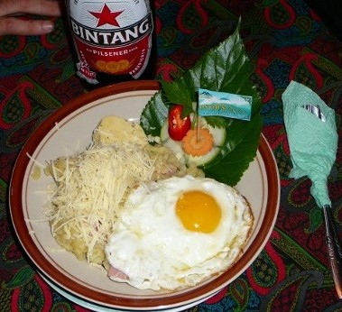
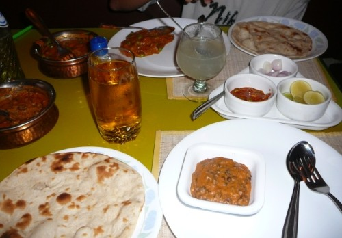

| What? | Where? | Comment |
| Octopus with chips | Night market @ Forodhani Gardens, Zanzibar | |
| Banana beer | Kande beach, Malawi | |
| Some homemade beer | Shebeen in a township close to Cape Town | |
| Farinha | Brazil | |
| Cheviche + Pisco Sour | Pisco, Peru | |
| [BUG: cow's heart (anticucho)] | La Paz, Bolivia | |
| [BUG: describe]  |
Spanish restaurant in Valparaiso | |
| "Mumm", just like grandmother made them | Wang Li Ying, Chinese (owned) restaurant in Rio Gallegos, Argentina | |
| Pig gut | Buenos Aires | |
| Lamingtons | Cairns | |
| Siomay + siomay isi udang + siomay isi cumi + 3 x kentang (potato) + kubis (cabbage + beans?). Deep fried and served with a plate peanut sauce. | Siomay Jakarta Kang Ujang, Yogyakarta | Delicious seafood dish. |
| Kentang goreng "Roestis Istimewa"
 |
Hotel Yoschi's, Java, Indonesia | Rösti a la Indonesia. The hotel is German-owned and advertises itself as "die beste Kartoffelgerichte seit 20 Jahren". The hotel is 1750m up in the mountains where people grow a lot of potatoes. |
| Roasted pork + rice + tapioca leaves + pig blood/chilly mixture | Berastagi, Sumatra, Indonesia | |
| Palm tree bark wine (tuak) | Berastagi, Sumatra, Indonesia | Rp 2000 per glass |
| 7-eleven hot dog | Thailand | If you are hungry and don't feel like wasting time and money in a restaurant, but want quality food then pick up a 20-Baht hot-dog from a 7-eleven (the main tourist streets in Banglamphu have at least 10 7-elevens, but there are many also in other parts of Bangkok). The clerk hands you the bun and the sausage, after which you can add as much sauce and salad as you wish. |
| Jelly drink | Damnoen Saduak, Thailand | Since having seen it for the first time in Malaysia in 2005 I had always wanted to drink this weird drink containing large chunks of floating jelly. But as this drink is mostly sold on the street and therefore based on water of unknown source I had always postponed trying it. Finally tried it while visiting the floating markets when Sumpun bought it for us. Verdict: texture interesting, taste not so much. |
| Fishballs with noodles and peanuts, with Red Bull and sugarcane juice | Close to Bangkok, Thailand | Red Bull was invented in Thailand. |
| Chocopie (sometimes under different names) | Laos; Vietnam; Cambodia; Thailand; India | Chocolate-covered cake with marshmallow inside. Sold in packs of 1, 6, and 12 cakes. |
| Sticky rice | Chiang Mai; Vieng Phouka | |
| Sandwiches of French bread | Luang Prabang, Laos | |
| Cao lầu | Hoi An, Vietnam | The specialty of Hoi An. |
| Stir-fried frog with vegetables | Nha Trang, Vietnam | Tasted like a combination of fish and chicken. |
| Dal makhani + roti + local beer Kingfisher
 |
Ideal Palace, Chowpatty Beach, Mumbai, India | Indian food is usually so spicy that I've had to throw it away after a few bites, or ordered Western food instead or even eaten in McDonald's in the first place. The dal makhani (a lentil dish) served by Ideal Place was very tasty and was not spicy at all. |
For selected food photos see the food-tag.
Kaarel, 2010-05-17